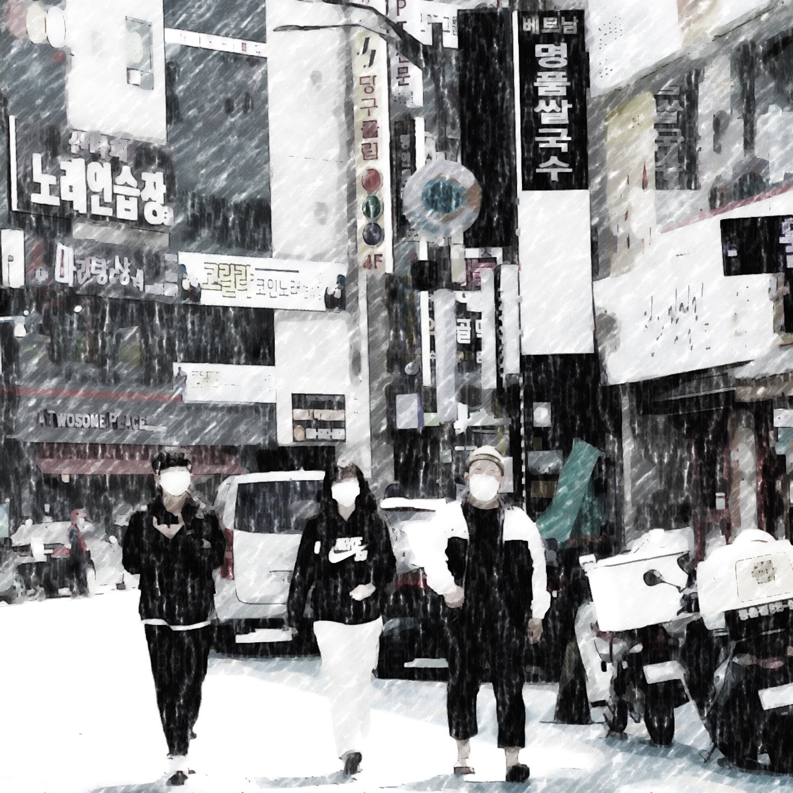

[동춘동에서 활동하는 동동갱 일부의 모습]
동동갱이란?
오후 3시부터 새벽 4시까지 동춘동을 주 활동지로 하는 무리.
오후시간대에는 카페와 pc방을 주로 다니며,
저녁시간대에는 동춘동과 연수동에서 음주를 즐기는 집단. 그들에게 음주장소는 중요하지 않다.
분위기나 맛이 좋은 포차나, 길거리의 공원에서의 노상이나
그들이 함께 술잔을 기울인다는 것으로 그들에겐 충분하다.
또한, 드라이브를 좋아하는 집단이기 때문에
송도, 대부도, 영종도, 한강 등의 장소로 시간에 구애받지 않고
드라이브를 즐기는 모습이 보이기도 한다.